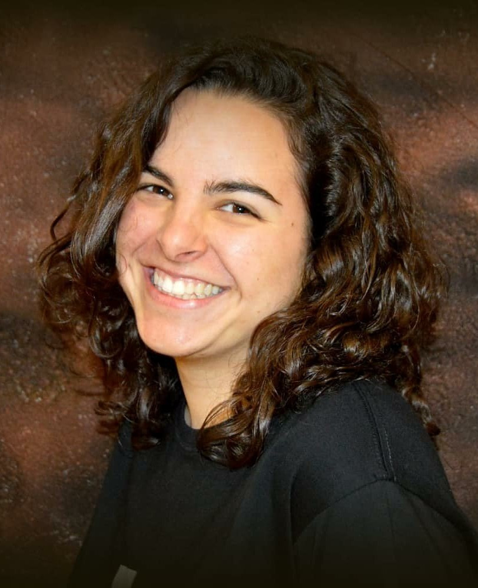

Thaís Campamà Sanz

Sóc la Thaís Campamà Sanz, monitora de lleure, historiadora de l'art i estudiant de psicologia, actualment en l'etapa final dels meus estudis. M'apassiona la ment humana, l'art, la creativitat i el creixement personal i m'agrada mantenir-me en constant formació.
Crec en el valor de l'aprenentatge i l'experiència en àmbits diversos i penso que la multidisciplinarietat és una de les millors estratègies per abordar nous reptes de manera resolutiva, versàtil, eficaç i creativa.
La formació i l'experiència adquirides en àmbits com l'art, l'educació i la psicologia em permeten integrar perspectives i eines diverses en la meva manera de treballar, aportant empatia, creativitat, pedagogia, escolta activa, capacitat d'adaptació, resolució de conflictes i assertivitat.
Aquests coneixements m'ajuden a afrontar nous projectes, continuar aprenent i créixer tant professionalment com personalment. Soy Thaís Campamà Sanz, monitora de ocio, historiadora del arte y estudiante de psicología, actualmente en la etapa final de mis estudios. Me apasiona la mente humana, el arte, la creatividad y el crecimiento personal y me gusta mantenerme en constante formación.
Creo en el valor del aprendizaje y la experiencia en ámbitos diversos y pienso que la multidisciplinariedad es una de las mejores estrategias para abordar nuevos retos de manera resolutiva, versátil, eficaz y creativa.
La formación y la experiencia adquiridas en ámbitos como el arte, la educación y la psicología me permiten integrar perspectivas y herramientas diversas en mi forma de trabajar, aportando empatía, creatividad, pedagogía, escucha activa, capacidad de adaptación, resolución de conflictos y asertividad.
Estos conocimientos me ayudan a afrontar nuevos proyectos, seguir aprendiendo y crecer tanto profesional como personalmente. I am Thaís Campamà Sanz, a leisure and activities instructor, art historian and psychology student, currently in the final stages of my degree. I am passionate about the human mind, art, creativity and personal growth and I am committed to continuous learning and professional development.
I believe in the value of learning and gaining experience in diverse fields, and I believe that an interdisciplinary approach is one of the best strategies for tackling new challenges in a resourceful, versatile, effective and creative way.
The training and experience acquired in fields such as art, education and psychology allow me to integrate diverse perspectives and tools into my way of working, bringing empathy, creativity, pedagogical skills, active listening, adaptability, conflict resolution and assertiveness.
This knowledge helps me to tackle new projects, continue learning and grow both professionally and personally.
Crec en el valor de l'aprenentatge i l'experiència en àmbits diversos i penso que la multidisciplinarietat és una de les millors estratègies per abordar nous reptes de manera resolutiva, versàtil, eficaç i creativa.
La formació i l'experiència adquirides en àmbits com l'art, l'educació i la psicologia em permeten integrar perspectives i eines diverses en la meva manera de treballar, aportant empatia, creativitat, pedagogia, escolta activa, capacitat d'adaptació, resolució de conflictes i assertivitat.
Aquests coneixements m'ajuden a afrontar nous projectes, continuar aprenent i créixer tant professionalment com personalment. Soy Thaís Campamà Sanz, monitora de ocio, historiadora del arte y estudiante de psicología, actualmente en la etapa final de mis estudios. Me apasiona la mente humana, el arte, la creatividad y el crecimiento personal y me gusta mantenerme en constante formación.
Creo en el valor del aprendizaje y la experiencia en ámbitos diversos y pienso que la multidisciplinariedad es una de las mejores estrategias para abordar nuevos retos de manera resolutiva, versátil, eficaz y creativa.
La formación y la experiencia adquiridas en ámbitos como el arte, la educación y la psicología me permiten integrar perspectivas y herramientas diversas en mi forma de trabajar, aportando empatía, creatividad, pedagogía, escucha activa, capacidad de adaptación, resolución de conflictos y asertividad.
Estos conocimientos me ayudan a afrontar nuevos proyectos, seguir aprendiendo y crecer tanto profesional como personalmente. I am Thaís Campamà Sanz, a leisure and activities instructor, art historian and psychology student, currently in the final stages of my degree. I am passionate about the human mind, art, creativity and personal growth and I am committed to continuous learning and professional development.
I believe in the value of learning and gaining experience in diverse fields, and I believe that an interdisciplinary approach is one of the best strategies for tackling new challenges in a resourceful, versatile, effective and creative way.
The training and experience acquired in fields such as art, education and psychology allow me to integrate diverse perspectives and tools into my way of working, bringing empathy, creativity, pedagogical skills, active listening, adaptability, conflict resolution and assertiveness.
This knowledge helps me to tackle new projects, continue learning and grow both professionally and personally.
Experiència
Experiencia
Experience
Monitora de lleure i professora d'anglès
Monitora de ocio y profesora de inglés
Leisure monitor and English teacher
Realització de les següents tasques:
- Disseny d'activitats i dinamització de grups tenint en compte les característiques de cada alumne i del grup en general.
- Atenció a les necessitats educatives i psicològiques de cada alumne, basant-me en els meus coneixements de psicologia infantil i educativa.
- Combinació de joc, arts escèniques i dinàmiques grupals per a garantir un aprenentatge amè i eficaç.
- Creativitat a l'hora de dissenyar activitats i material per adaptar-me a les característiques de l'alumnat. Adaptació i creació de materials alternatius quan és necessari.
- Comunicació amb les famílies.
- Resolució de conflictes i situacions complexes.
Realización de las siguientes tareas:
- Diseño de actividades y dinamización de grupos teniendo en cuenta las características de cada alumno y del grupo en general.
- Atención a las necesidades educativas y psicológicas de cada alumno, basándome en mis conocimientos de psicología infantil y educativa.
- Combinación de juego, artes escénicas y dinámicas grupales para garantizar un aprendizaje ameno y eficaz.
- Creatividad a la hora de diseñar actividades y material para adaptarme a las características del alumnado. Adaptación y creación de materiales alternativos cuando sea necesario.
- Comunicación con las familias.
- Resolución de conflictos y situaciones complejas.
Key responsibilities:
- Designing activities and facilitating group dynamics taking into account the characteristics of each student and the group in general.
- Addressing the educational and psychological needs of each student, based on my knowledge of child and educational psychology.
- Combination of play, performing arts and group dynamics to ensure enjoyable and effective learning.
- Creativity when designing activities and materials to adapt to the characteristics of the students. Adaptation and creation of alternative materials when necessary.
- Communication with families.
- Resolving conflicts and complex situations.
Professora de playback i teatre
Profesora de playback y teatro
Playback and theater teacher
Dinamització i direcció d'un grup de playback i d'un grup de teatre en un casal de la gent gran. Creació de la posada en escena i realització de dinàmiques grupals per treballar habilitats interpretatives com l'expressió corporal i la veu.
- Creació de guions a partir d'improvisacions.
- Edició de música per adaptar les cançons a la posada en escena. Creació de llistes de reproducció.
- Gestió d'imprevistos durant les actuacions en directe.
- Exercici de funcions de regidoria durant els espectacles.
- Gestió i mediació de conflictes.
- Suport emocional, encoratjament i foment de la participació.
Dinamización y dirección de un grupo de playback y de un grupo de teatro en un casal de personas mayores. Creación de la puesta en escena y realización de dinámicas grupales para trabajar habilidades interpretativas como la expresión corporal y la voz.
- Creación de guiones a partir de improvisaciones.
- Edición de música para adaptar las canciones a la puesta en escena. Creación de listas de reproducción.
- Gestión de imprevistos durante las actuaciones en directo.
- Ejercicio de funciones de regiduría durante los espectáculos.
- Gestión y mediación de conflictos.
- Apoyo emocional, motivación y fomento de la participación.
Facilitation and direction of a playback group and a theater group in a senior center. Creating the staging and facilitating group activities to develop performing skills such as body language and voice.
- Creation of scripts from improvisations.
- Editing music to adapt songs to the staging. Creation of playlists.
- Handling unexpected situations during live performances.
- Exercise of stage management duties during shows.
- Conflict management and mediation.
- Emotional support, encouragement and fostering of participation.